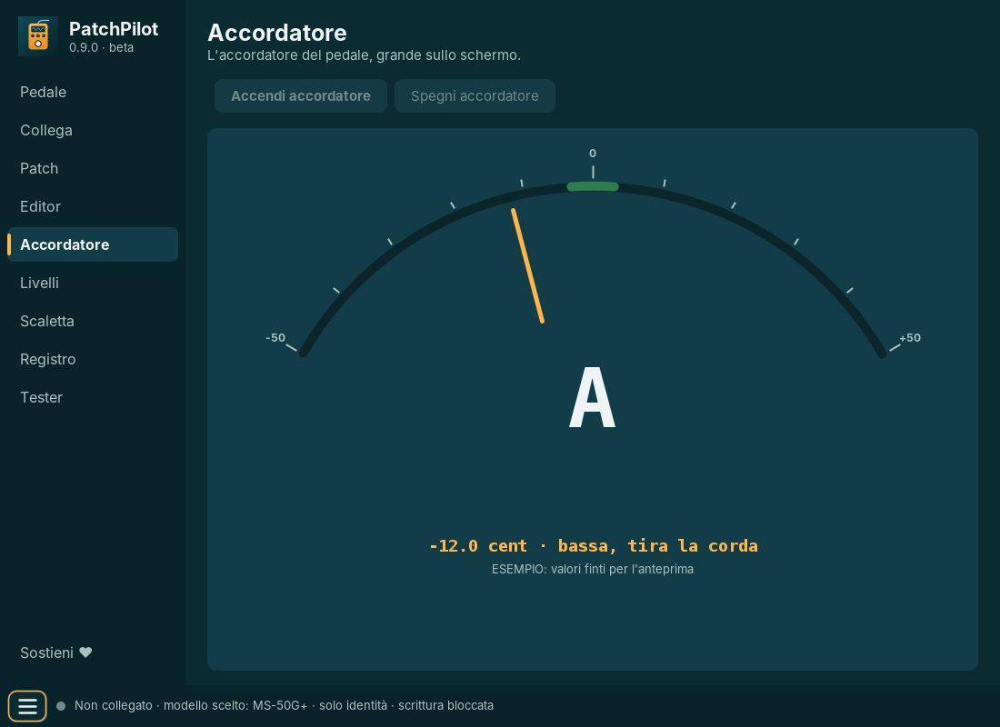
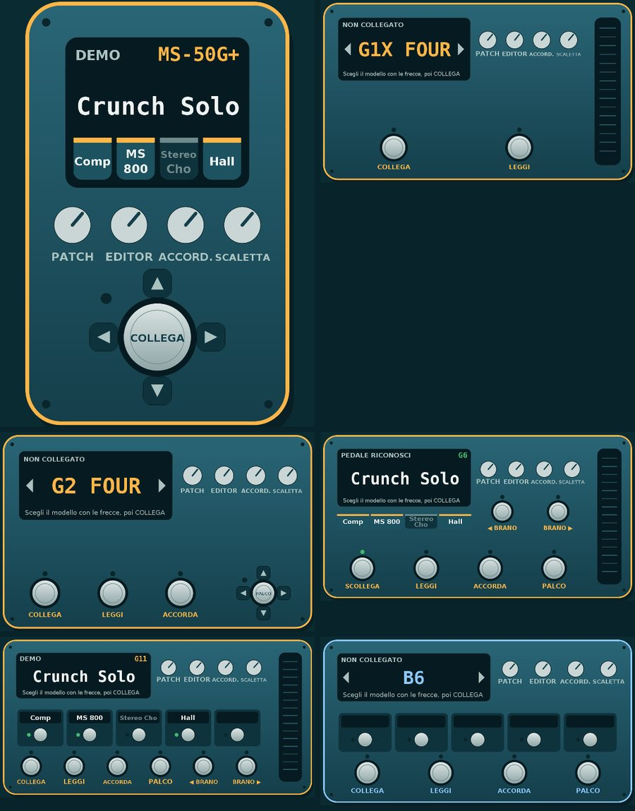

📦 Il download di oggi è la 0.9.0. Tutto quello che è segnato 0.9.1 — collegamento automatico, l'AI che imposta il suono sul pedale, il coach, il suono preso da un brano, le varianti, le 10 lingue e i nuovi pedali — arriva con la 0.9.1, il prossimo aggiornamento.
🧪 Beta. Provata su uno Zoom MS-50G vero; sugli altri modelli funziona tutto allo stesso modo, con l'avviso «Modello in prova» e il pulsante «Manda il registro…». Ne hai uno? Aiutaci in 5 minuti.
Come funziona: tre passi
Non serve sapere cos'è un compressore, quale manopola è quale o come funzionano i menu del tuo modello.
🔌 Collega
PatchPilot riconosce il pedale e si collega appena attacchi il cavo. Legge tutte le tue patch e salva un backup con data e ora prima di toccare qualsiasi cosa. Niente porte da scegliere, niente caselle da spuntare. 0.9.1
💬 Chiedi un suono
Premi Chiedi un suono e scrivilo a modo tuo: crunch blues caldo pulito anni '80 con chorus. L'AI lo costruisce con gli effetti veri del tuo pedale e PatchPilot lo mette sul pedale — effetti, acceso/spento, manopole. Oppure carica 20–30 secondi di una canzone. 0.9.1
🎯 Rifinisci parlando
troppo impastato come prima ma meno distorto fallo tu. Il coach del suono cambia solo quello che serve e lo spiega in una riga. Ogni passo è una variante: con un clic torni indietro. 0.9.1
Poi suoni: scaletta, modalità palco e brani che seguono il tempo ti dicono qual è il suono successivo.
🛡️ I suoni che hai salvato non vengono mai sovrascritti
PatchPilot cambia il suono come fai tu quando giri le manopole del pedale. Non salva mai sopra le tue patch: ti piace? la salvi; non ti piace? cambi patch e torna com'era.
Sui pedali che lo permettono, tutte le patch vengono salvate in un file con data e ora prima della prima modifica — mai sovrascritto.
Ripristino di fabbrica e cancellazione di file nel pedale sono bloccati nel codice. Salvataggio in memoria e invio di patch intere restano spenti finché un modello non è provato.
Tutto quello che fa
Il suono, senza il manuale
Chiedi un suono. Lo descrivi, PatchPilot lo costruisce sul pedale. Sulla famiglia dei vecchi MultiStomp può anche aggiungere effetti che la patch non ha. 0.9.1
Coach del suono. Continui a parlare: cambia 1–3 cose alla volta, dice cosa ha toccato e ogni passo si può annullare. 0.9.1
Suono preso da un brano. 20–30 s da file o dal microfono: distorsione, timbro, ripetizioni del delay, coda del riverbero e modulazione misurati sul tuo computer — l'audio non esce mai. 0.9.1
Il maestro. Spiegami questa patch: a cosa serve ogni effetto e ogni manopola, come lavorano insieme e un piccolo esperimento da provare. 0.9.1
Manopole girate per te. Muovi una manopola nell'editor e si muove sul pedale. 0.9.1
Varianti. strofa pulita, assolo con più gain: più versioni della stessa patch, tenute sul tuo computer. 0.9.1
Guarda dentro il pedale
Si collega da solo. Attacchi il cavo ed è collegato; lo stacchi e si scollega. 0.9.1
Tutte le patch con il nome. L'elenco completo in un colpo d'occhio, quella in uso in evidenza.
Nomi veri. Effetti e manopole con i loro nomi e limiti, a manopole o a fader.
Accordatore a lancetta. Grande sullo schermo, si legge anche da lontano.
Il tuo pedale sullo schermo. La pagina principale disegna il tuo modello, con display, manopole e interruttori.
10 lingue. Italiano, English, Français, Español, Deutsch, Português, Svenska, Dansk, Slovenščina, Hrvatski. 0.9.1
Suoni al sicuro
Backup automatico. Tutte le patch in un file con data, da riaprire anche senza pedale.
Schede suono. Una scheda leggibile per ogni patch, da stampare o condividere.
Ricerca per effetto. «Dove ho usato quel delay?»
Confronto. Due patch una accanto all'altra, solo le differenze.
Sul palco
Scaletta. Una patch per ogni brano, una per pedale se ne usi più di uno; capotasto e note.
Barra dei brani. Rotella del mouse, frecce, barra spaziatrice o pedale volta-pagina USB/Bluetooth; ricerca per nome.
Modalità palco. Schermo scuro, caratteri grandi: cosa suonare adesso e cosa viene dopo.
Brani che seguono il tempo. Sezioni con le loro battute, conteggio iniziale e avviso «PREPARA» prima di ogni cambio; tempi del delay per il tempo.
Passaggi graduali. Il suono cambia piano piano, come con un pedale d'espressione virtuale.
Volume e comunità
Tutte le patch allo stesso volume. Suoni lo stesso giro con ogni patch: PatchPilot misura il volume come lo sente l'orecchio (LUFS) e ti dice il livello da impostare.
Livello audio e fader MIDI. Vedi il livello del segnale; mandi volume ed espressione a un pedale MIDI.
Libreria di patch. Patch condivise da chi usa PatchPilot, libere (CC0), per brano, artista, genere e pedale. Condividi la tua con un clic.
Pagina Tester. Il tuo pedale non c'è? Una registrazione guidata che ascolta soltanto ci aiuta ad aggiungerlo.
Pedali supportati: 37 + qualsiasi pedale MIDI
| Pedali | Riconosciuto da solo | Legge le patch | PatchPilot imposta il suono | Stato |
|---|---|---|---|---|
| Zoom MS-50G | ✅ | ✅ tutte le 50 + backup | ✅ in un colpo solo, effetti compresi | ✅ provato su un pedale vero |
| Zoom MS-60B · MS-70CDR · G1on · G1Xon · B1on · B1Xon · G3 · G3X · B3 0.9.1 | ✅ | ✅ + backup | ✅ in un colpo solo, effetti compresi | 🧪 in prova |
| Zoom MS-50G+ · MS-60B+ · MS-70CDR+ · MS-80IR+ · MS-200D+ · MS-90LP+ | ✅ | ✅ + accordatore | ✅ una modifica alla volta 0.9.1 | 🧪 in prova |
| Zoom G2 FOUR · G2X FOUR · B2 FOUR | ✅ | ✅ + accordatore | ✅ una modifica alla volta 0.9.1 | 🧪 in prova |
| Zoom G1 FOUR · G1X FOUR · B1 FOUR · B1X FOUR · G3n · G3Xn · G5n · B3n | ✅ | ✅ | ✅ una modifica alla volta 0.9.1 | 🧪 in prova |
| Zoom G6 · G11 · B6 | lo scegli una volta | ✅ | ✅ una modifica alla volta 0.9.1 | 🧪 non ancora provati su un pedale vero |
| Boss Katana MkII · GT-100 · GT-1000 / GT-1000CORE · Valeton GP-200 0.9.1 | ✅ | ✅ patch in uso | ✅ una modifica alla volta | 🧪 in prova |
| Boss Katana MkI · NUX Mighty Lite BT MkII 0.9.1 | lo scegli una volta | ✅ patch in uso | ✅ una modifica alla volta | 🧪 in prova |
| Line 6 HX Stomp 0.9.1 · qualsiasi pedale MIDI, di qualsiasi marca | – | – | cambio patch per ogni brano, comandi MIDI | MIDI standard |
🙋 Il tuo pedale non è in elenco? Diventa tester. Il programma per computer ha la pagina Tester: una registrazione guidata che ascolta soltanto. Al pedale manda solo la richiesta di identità MIDI standard, poi registra quello che il pedale invia mentre cambi patch e giri una manopola. Manda il file a autofonic.mixer@gmail.com con marca e modello.
Com'è fatto
Schermate del programma per computer (versione 0.9.0).





📱 App Android in arrivo su Google Play
Lo stesso PatchPilot sul telefono o sul tablet, con un cavo USB-C o OTG: niente computer in sala prove o sul palco. Uscirà solo su Google Play.
Un dito solo. Scorri sul pedale: sinistra/destra cambia modello, su/giù cambia brano.
Collega e basta. Il pedale viene riconosciuto da solo appena attacchi il cavo: niente pulsanti, niente impostazioni MIDI.
Coach del suono. Scrivi «più distorto» o «delay anni '80»: l'AI gira le manopole, accende gli effetti e aggiunge quelli che mancano, poi ti dice cosa ha fatto. Ogni passo si annulla.
Suono preso da un brano. Fai ascoltare 20–30 secondi: il telefono misura distorsione, delay, riverbero e modulazione, l'AI costruisce la patch. L'audio non esce dal telefono.
Accordatore, editor, backup. Lettura delle patch con i nomi di effetti e parametri, varianti salvate sul telefono, spiegazione della patch per chi comincia.
Scaletta e palco. Sezioni a tempo, avviso «PREPARA», pedali volta-pagina Bluetooth.
Stessi prezzi del computer. Versione completa 6,99 € una volta sola, con l'AI inclusa per 12 mesi; si compra dentro l'app con Google Play, come le 100 richieste in più.

Si installa in un minuto
| Windows 10/11 | …-windows-x64-setup.exe oppure lo .zip senza installazione. SmartScreen: Ulteriori informazioni → Esegui comunque. |
| macOS | …-macos-arm64.dmg (M1–M4) oppure …-macos-x64.dmg (Intel). La prima volta: Impostazioni di Sistema → Privacy e sicurezza → Apri comunque. |
| Linux | …-linux-x64.deb (sudo apt install ./PatchPilot-….deb) oppure .tar.gz. |
| Poi | Collega il pedale con il suo cavo USB. Basta così. Chiudi prima Guitar Lab: il pedale parla con un programma alla volta. |
Gratis e versione completa
5 giorni con tutto acceso, AI compresa (fino a 50 richieste al giorno). Poi quello che serve per usare il pedale resta gratis per sempre.
| Gratis per sempre | Versione completa | |
|---|---|---|
| Riconoscimento, elenco patch, editor, manopole dal computer, accordatore | ✅ | ✅ |
| Backup nel programma, registro, pagina Tester, libreria di patch | ✅ | ✅ |
| Scaletta | 3 brani | senza limiti + modalità palco |
| Esportazione del backup, schede suono, ricerca, confronto | — | ✅ |
| Varianti | — | ✅ |
| AI: chiedi un suono, coach, suono da un brano, maestro | 5 giorni di prova, fino a 50 al giorno | ✅ 25 richieste al giorno per 12 mesi |
Cosa dire al coach: esempi
Scrivi come parleresti a un amico chitarrista: non servono nomi di manopole né di effetti.
Per partire, «Dimmi il suono»: crunch anni '70 alla AC/DC pulito brillante per arpeggi lead caldo con delay lungo distorsione metal stretta, senza fruscio suono ambient con riverbero enorme blues alla SRV
Per rifinire: troppo impastato più aggressivo meno distorto più bassi più presente nel mix come prima ma più pulito fallo tu
Sugli effetti: aggiungi un chorus leggero togli il delay riverbero più corto delay a tempo, anni '80 accendi un compressore
Se non ti piace: torna indietro rifallo da capo spiegami cosa hai cambiato
Il coach usa solo gli effetti del tuo pedale e cambia 1–3 cose alla volta. Ogni frase è una richiesta.
Assistente AI: richieste gratis e a pagamento
Ogni messaggio all'assistente è una richiesta: «Chiedi un suono», ogni passo del coach, «Suono preso da un brano», «Spiegami questa patch». Tutto il resto di PatchPilot non usa richieste.
| Richieste | Prezzo | |
|---|---|---|
| Prova (senza codice) | fino a 50 al giorno per 5 giorni | gratis |
| Versione completa | 25 al giorno per 12 mesi dal primo uso | inclusa nei 6,99 € |
| Rinnovo AI dopo i 12 mesi | 25 al giorno per altri 12 mesi | 2,99 € |
| 100 richieste in più | non scadono mai; si usano da sole quando finiscono quelle del giorno o i mesi inclusi | 1,99 €, quante volte vuoi |
Le 100 richieste valgono con la versione completa sbloccata. Sul computer: compra 100 richieste con la carta (1,99 €) scrivendo il codice dispositivo della pagina Sostieni ♥, oppure dal pulsante dentro PatchPilot; le richieste compaiono da sole alla richiesta successiva. Paghi con PayPal? Scrivici con il codice dispositivo: ricevi un codice AI da scrivere nella pagina Sostieni ♥. Su Android si comprano dentro l'app con Google Play. Quando l'AI non è più attiva, il resto di PatchPilot resta tuo per sempre.
Versione completa: 6,99 €, una volta sola
- In PatchPilot apri la pagina Sostieni ♥ e copia il codice dispositivo (
PP-ABCD-EFGH). - Carta, Google Pay o Apple Pay: paga 6,99 € con Stripe, incolla il codice dispositivo: il codice di sblocco appare subito dopo il pagamento.
- PayPal: paga 6,99 €, poi scrivi ad autofonic.mixer@gmail.com: il codice di sblocco arriva per email, di solito entro un giorno.
Domande frequenti
Devo sapere come funziona il mio pedale?
No. Lo colleghi e descrivi il suono con parole tue: PatchPilot sceglie gli effetti e imposta le manopole sul pedale, poi ti dice in una riga cosa ha fatto. Se vuoi imparare, «Spiegami questa patch» ti spiega ogni effetto e ogni manopola.
PatchPilot può rovinare le mie patch?
PatchPilot lavora sulla patch in uso, come quando giri le manopole del pedale, e non salva mai sopra le tue patch. Prima della prima modifica salva un backup con data di tutte le patch (sui pedali che lo permettono). Ripristino di fabbrica e cancellazione di file sono vietati per sempre.
Quali pedali supporta?
30 pedali Zoom — MS-50G, MS-60B, MS-70CDR, la serie MultiStomp+, G1on/B1on, G3/B3, G1/B1 FOUR, G2/B2 FOUR, G3n, G5n, G6, G11, B6 — più Boss Katana MkI/MkII, GT-100, GT-1000, Valeton GP-200, NUX Mighty Lite BT MkII, Line 6 HX Stomp e qualsiasi pedale MIDI per il cambio patch. Provato su un MS-50G vero; gli altri sono in prova.
Può copiare il suono di una canzone?
Con la 0.9.1: carichi 20–30 secondi di una canzone o la fai sentire al microfono. PatchPilot misura sul tuo computer distorsione, timbro, delay, riverbero e modulazione e l'AI costruisce una patch simile con gli effetti del tuo pedale. Funziona meglio con la chitarra da sola. L'audio non esce mai dal computer.
C'è un'app Android per i pedali Zoom MultiStomp?
Le app Guitar Lab di Zoom per questi pedali sono quasi tutte per iPhone. L'app Android di PatchPilot è in arrivo su Google Play, con riconoscimento automatico del pedale, coach del suono con l'AI e suono preso da un brano; oggi PatchPilot funziona su Windows, macOS e Linux.
PatchPilot è un'alternativa a Guitar Lab?
Sì, e funziona anche su Linux e con modelli più vecchi come MS-50G, G1on e G3 che un'app non ce l'hanno. Non installa i file degli effetti Zoom: per quelli serve ancora il programma di Zoom.
Cosa manda l'AI su internet?
Solo la tua richiesta e i valori della patch (numeri). Mai l'audio: canzoni e microfono vengono misurati sul tuo computer. Tutto il resto funziona senza internet.
Quanto costa?
Il download è gratis: per 5 giorni hai tutto acceso, con fino a 50 richieste AI al giorno. Poi riconoscimento, lettura delle patch, editor, accordatore e scaletta di 3 brani restano gratis per sempre. La versione completa costa 6,99 € una volta per dispositivo e include l'assistente AI per 12 mesi (25 richieste al giorno); poi rinnovo a 2,99 € l'anno, oppure pacchetti da 100 richieste a 1,99 € che non scadono.
PatchPilot è fatto da Zoom?
No. PatchPilot è un progetto indipendente, non affiliato a Zoom, Boss/Roland, Valeton, NUX o Line 6.